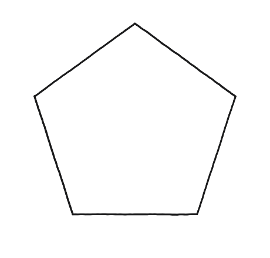
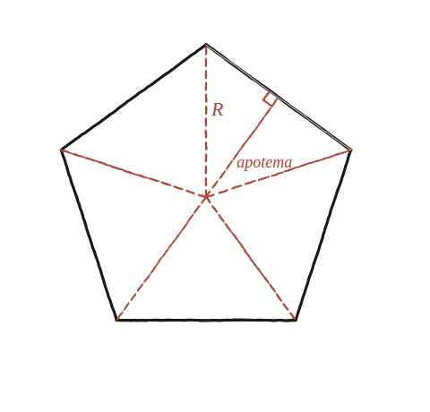

Quina és l'àrea d'un pentàgon regular?

El mateix moviment d'abans, aplicat aquí
Unir el centre d'un polígon regular amb tots els seus vèrtexs el parteix en tants triangles com costats té. Amb un pentàgon regular, aquest moviment —ja fet servir amb el dodecàgon a la Qüestió 30— dona cinc triangles, i com que el pentàgon és regular, tots cinc són idèntics entre si: no cal sumar cinc àrees diferents, n'hi ha prou de trobar-ne una i multiplicar per cinc.
Dos segments que no s'han de confondre
Des del centre hi ha dos segments diferents que és fàcil confondre: el radi R (centre a un vèrtex) i l'apotema a (centre al punt mitjà d'un costat, en angle recte amb aquell costat). Per calcular l'àrea de cada triangle cal l'apotema, no el radi: és l'apotema qui fa d'altura del triangle quan se'n pren el costat del pentàgon com a base.

L'àrea d'un triangle, i després els cinc
Cada un dels cinc triangles té per base el costat s del pentàgon i per altura l'apotema a: la seva àrea és (1/2)·s·a. Multiplicant pels cinc triangles: àrea del pentàgon = (5/2)·s·a.
Una fórmula només amb el costat
Si es vol una fórmula que depengui únicament de s (sense haver de mesurar l'apotema per separat), cal expressar-la en funció de s amb trigonometria: partint el triangle isòsceles de radi per la meitat amb l'apotema, s'obté a = s / (2·tan(36°)) —36° perquè l'angle complet al centre és 360°/5=72°, i l'apotema el biseca en dos triangles rectangles de 36° cadascun. Substituint: àrea = (5/4)·s² / tan(36°).
Àrea del pentàgon = (5/2)·s·a (amb a l'apotema), o bé (5/4)·s²/tan(36°) si només es coneix el costat. Surt de partir el pentàgon en cinc triangles isòsceles idèntics des del centre —el mateix moviment que amb el dodecàgon a la Qüestió 30—, i val, de fet, per a qualsevol polígon regular de n costats, no només el pentàgon.
Comprovació
Amb s=10: apotema a≈6,88, àrea d'un triangle=(1/2)×10×6,88=34,4, àrea total=5×34,4=172. La fórmula (5/4)s²/tan(36°) dona ≈172,05, coincidint amb petit marge d'arrodoniment.